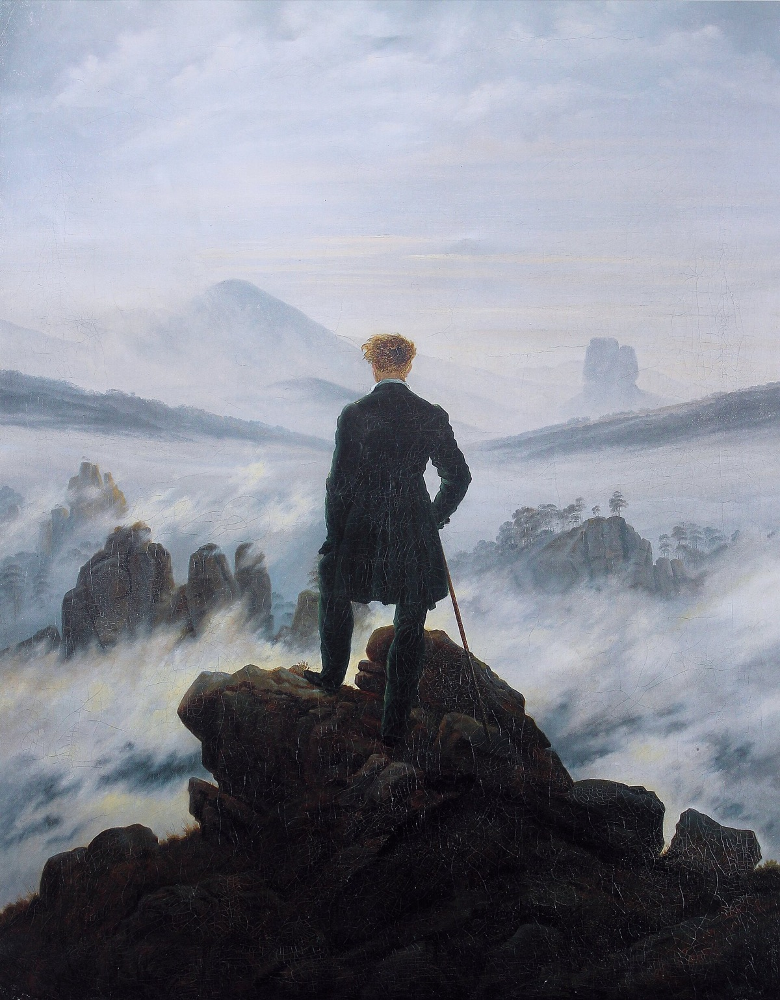
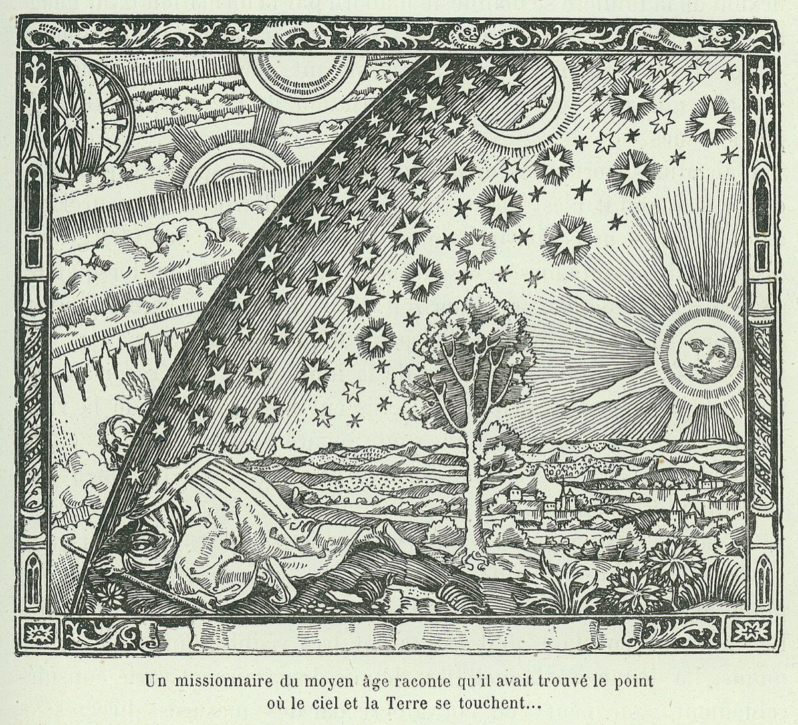
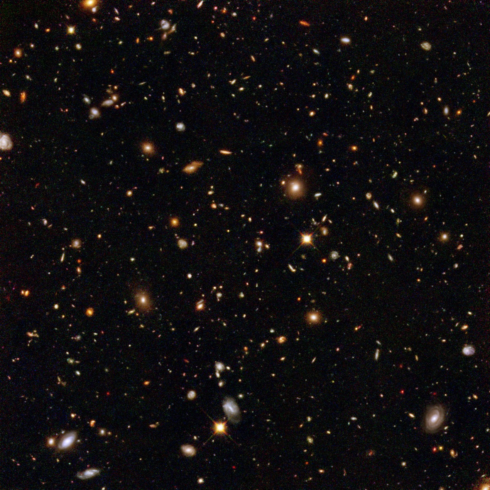

“Absence of evidence is not evidence of absence.”Carl Sagan
You have come, by now, through nine chapters. You have read what we know about agency detection, about demons and exorcism, about spirit photography and mediums, about witch hunts and astrology, about the pseudoscience museum, about religious experience, and about the conspiratorial mind. We have shown you the mechanisms, the histories, and the harms. We have, more carefully than is sometimes done in books like this, refused to make the easy moves — we have not said that believers are stupid, we have not said that mystical experience is “just” brain chemistry, and we have not said that science has settled the metaphysical questions. The volume has tried, in every chapter, to honour both the seriousness of what is at stake and the limits of what can be honestly claimed. This last chapter is about how to live, afterwards, with the result.
The most important thing this chapter has to do is to be precise about three different registers in which we have spoken, because most of the unproductive arguments about religion, the paranormal, and pseudoscience happen because someone is treating one register as if it were another. We will name them now, plainly, and the rest of the chapter will work outward from them.
The first register is what the evidence does, in fact, show. That mediums use cold-reading techniques; that spirit photographs are produced by double exposures; that the Carlson 1985 trial of astrology in Nature showed astrologers performing at chance; that homeopathic remedies are chemically indistinguishable from the diluent; that the visible “evidence” for almost every supernatural claim, on careful investigation, reduces to known psychological and physical mechanisms. This is the register of empirical refutation. It is firm, well-documented, and the volume has not been shy about it.
The second is what the evidence cannot show, even in principle. That no spirits exist; that no god exists; that no consciousness survives bodily death; that the experiences of mystics and visionaries correspond to nothing outside the skull of the experiencer. This is the register of metaphysical absence claims, and it is — on the careful philosophy of science of the last hundred years — almost completely beyond the reach of empirical method. We can have many failures to detect; we cannot, in any rigorous sense, prove a metaphysical absence. The volume has tried, in chapter after chapter, to keep this distinction visible.
The third is the small honest remainder — the cases where, after careful investigation, something not fully explained survives. D. D. Home and the credible parts of his career; the genuinely anomalous cases inside the larger near-death-experience literature; some of the cleaner felt-presence reports; some of the harder-to-dismiss historical mystical encounters. These do not amount to proof of anything. They amount to the honest residue that any serious investigation of the paranormal has the duty to acknowledge.
The conscientious reader, then, holds three positions at once: confident in the empirical refutations, modest about the metaphysical absences, and clear-eyed about the small remainder. The rest of this chapter explains how.
Confident in the empirical refutations; modest about the metaphysical absences; clear-eyed about the small honest remainder. The volume has tried to teach the discipline of holding the three at once.
The Sagan LineAbsence of Evidence Is Not Evidence of Absence
Carl Sagan’s line, our epigraph, is one of the most-quoted and most-misunderstood sentences in modern scientific epistemology. It does not mean — as is sometimes argued in defence of paranormal claims — that anything which has not been definitively disproved should be treated as live. It means, more precisely, that the failure to find evidence of X is not, by itself, conclusive proof that X does not exist. The strength of the inference depends on how hard we looked, in what conditions, and with what instruments. A failure to find a particular asteroid in last night’s observation tells us almost nothing; sixty years of careful failure to find any signal at all from any astrological theory tells us a great deal.1
The honest application of Sagan’s principle in this volume runs along the following lines.
Where claims have been tested under conditions designed to detect the proposed mechanism, and the mechanism has failed to appear — over decades, by careful investigators, with consistent results — the burden of proof shifts decisively to the proponents. Astrology has been in this category since the Carlson 1985 study. Homeopathy has been since the Cochrane meta-analyses. Therapeutic touch has been since Emily Rosa’s 1998 paper. The professional mediums of the séance industry have been since Houdini. To continue insisting that these effects are real, in the face of this much careful failure to detect them, is no longer the same kind of position as it was in 1900. It is a position that has to take responsibility for a great deal of disconfirming evidence, and the available defences (“the wrong conditions were tested,” “the practitioner was not in the right state,” “sceptical scrutiny inhibited the effect”) start to resemble the structurally-unfalsifiable defences we surveyed in the chapter on witchcraft and on the conspiratorial mind.
Where claims have not been tested under suitable conditions — because the claim is, by its nature, untestable — the situation is different and the honest scientist says so. The metaphysical existence of God is not a claim science can test; the existence of an immaterial soul, defined as undetectable, is not a claim science can test; the existence of a benevolent universe or a moral order is not a claim science can test. To say that science has found no evidence for these is true. To say that science has therefore shown they do not exist is to overreach.

The Small Honest RemainderWhat Has Not Been Explained Away
Across the literature of the paranormal there is, after a century of careful debunking, a small but real remainder — a class of phenomena and cases for which the available naturalistic accounts are incomplete. Honesty requires acknowledging this. Sensationalism requires being careful about how much weight it can bear.
What is in the remainder, on the best modern reading?
The case of Daniel Dunglas Home, the Victorian medium, remains the cleanest unsolved file. He worked in the light. He was investigated by hostile scientific witnesses, including Sir William Crookes; he was watched at close quarters for thirty years; he was never caught cheating. He may have been the most accomplished stage magician of his century, working with techniques he never revealed. He may have been something stranger. The honest position is that we have not satisfactorily explained him. He is one case.2
A subset of near-death experiences remains debated. The phenomenology of the experiences is now well-mapped; most features have plausible neural explanations (anoxia, ketamine-like endogenous compounds, REM intrusion). The genuinely hard cases are the small number of well-documented reports of accurate perception of events in the resuscitation room during periods of apparently absent brain activity. The AWARE studies and their successors have tried to test these claims with rigorous protocols (placing visual targets visible only from the ceiling); the results so far have not conclusively detected the effect, but the relevant sample of comparable cases is small. The honest reading is that the question is open, the evidence is suggestive of nothing yet, and the next generation of studies may settle it.3
Some reports of post-bereavement hallucinations involve information the grieving party should not have had — the location of a misplaced will, the identity of a previously unknown relative, a contemporaneous detail of an event happening elsewhere. The careful literature on these (Greyson, Kelly, the University of Virginia Division of Perceptual Studies) considers them under the heading of “veridical” reports. Many of these dissolve, on close investigation, into post-hoc memory reconstruction or selective recall. A handful do not, and they constitute the small portion of the parapsychological literature that has resisted easy refutation. They are not a great deal of evidence; they are some.4
And the mystical experience itself, as we saw at length in Chapter Eight, has reliable phenomenology, identifiable neural correlates, reproducible laboratory production via psilocybin, and durable measurable life-effects. What it is of remains a question neuroscience cannot decide. The remainder here is not that the experience itself is unexplained; it is that its referent is.
Acknowledging the remainder is not a concession to credulity. It is the discipline of staying honest about how much we have actually shown. A volume that ended by saying “the science has shown all of this is illusion” would be no more accurate than the apologetic that claims the science has proved the supernatural. The truth, as best as the current evidence can tell us, sits in a more uncomfortable place than either, and a thinking reader is supposed to be able to live there.
The Larger ModestyHow Much We Still Don’t Know

It is worth pausing on this image, because it administers a particular kind of correction that the sceptical reader sometimes needs as much as the credulous one. The Hubble Ultra Deep Field is, to a tenth of a degree of arc, one of the most empty-looking small patches of sky the astronomers could find. The image is what those ten thousand galaxies actually look like, when given enough exposure time, in a patch the size of a grain of sand held at arm’s length. We live, on the best current cosmological estimates, in a universe whose visible portion contains something on the order of two trillion galaxies, each containing on average a hundred billion stars. The fraction of this universe we have even looked at carefully is, by an honest accounting, vanishingly small.5
And of what we have looked at, the dominant components — the dark matter that makes up about a quarter of the universe’s mass-energy, the dark energy that makes up about seventy per cent — we cannot directly detect with any instrument and we have no settled theoretical account of. The substance of the universe is, by current estimates, approximately five per cent the kind of matter our physics knows about and ninety-five per cent something we cannot yet name. This is the considered view of mainstream cosmology in our own decade. The universe the modern educated reader inhabits is, on its own science, mostly something we do not yet understand.
This does not, of course, mean that ghosts, gods, and demons fill the unexplained portion. To make that leap would be to commit, on a galactic scale, exactly the error of agency detection that opened this volume. The unaccounted-for ninety-five per cent of the universe is probably not anybody’s old aunt come back to visit. What the Hubble field does do is administer a measure of modesty about what kind of position we are in, as a knowing species. We are not at the end of investigation. We have been at it, in any rigorous form, for perhaps four hundred years. The careful person holds two things at once: that the careful methods we have developed work very well within their range, and that the range is much smaller than the popular triumphalism about science sometimes suggests.
A Practical RecommendationJames’s Criterion, Carried Across the Volume
If the metaphysical questions are, on the careful epistemology, beyond settling, then by what criterion is a thoughtful person supposed to decide how to hold their beliefs? William James, whom we met in the chapter on mystical experience, gave one of the most useful answers ever proposed to this question, and we will carry it through the whole volume now as the closing recommendation.6
Judge a belief, James said, by its fruits. By what it produces in the life of the person who holds it. By the kind of love it makes possible, the kind of courage it sustains, the kind of work it inspires, the kind of mercy it permits toward those who hold different beliefs. By whether it makes its holder more alive to the world or more contracted from it; more able to bear suffering or more shattered by it; more present to those they live with or more remote from them.
This is not relativism. It is not the claim that all beliefs are equally true. It is, on the contrary, a working criterion that distinguishes belief-systems with a long record of producing human flourishing from belief-systems with a long record of producing human harm, without requiring us first to settle which of them is metaphysically correct. The criterion does, in fact, distinguish well. The contemplative tradition of any of the major faiths, when practised carefully, has fruits that the careful observer can recognise. The witch-burning enthusiasm of the early modern period had different fruits. So did the cult that drank Kool-Aid in Jonestown. So did the medieval pogroms. The criterion is real; it has work to do; and it has the advantage of not requiring that we adjudicate between the irreducibly metaphysical and the merely false.
Applied to the material of this volume, the criterion gives some practical guidance.
The carefully practised contemplative life — in whatever religious or secular form — has good fruits on the historical record, and the science of mystical experience confirms that it produces real and lasting changes in the practitioner. We have not shown that the God of any particular tradition exists; we have shown that the practice is good for the people who undertake it carefully, and the careful person can act on this without claiming more.
The casual reading of a horoscope at breakfast has, on any honest measure, very small fruits in either direction; it is not the kind of thing James’s criterion much engages with, and we should not pretend it is. The serious organisation of one’s life around a chart, by contrast, is the substitution of an oracle for honest counsel, and the fruits of that are worse than the simple cost of being wrong.
The use of homeopathy for chronic back pain has fruits that the criterion endorses. The use of homeopathy in place of insulin for type 1 diabetes has fruits that the criterion condemns absolutely. The criterion does not care about the metaphysics. It cares about the life.
And conspiracy belief, by the criterion, fails almost universally: the lives of conspiratorial communities show, in the record, more isolation, more fear, more rupture from loved ones, more political violence, fewer of the goods that flourishing human lives display. This is not a refutation of the metaphysical claim that there is a cabal; it is a verdict on the fruits of believing there is. James’s criterion is the working alternative to the metaphysical adjudication that we cannot in any case do.
Judge a belief by its fruits. By the love it makes possible, the courage it sustains, the mercy it permits toward those who hold differently. This is not relativism. It is the working alternative to a metaphysical adjudication we cannot in any case do.
Two ConversationsThe Believer’s Defence and the Sceptic’s
The volume has tried, throughout, to speak fairly to two kinds of reader: the sincere believer who holds at least some of the experiences this volume covers as true, and the convinced sceptic who arrived at the first page expecting an exposure of foolishness. Both have a defence to make at the closing, and both deserve to make it.
The believer’s defence. Nothing in this volume has proved that what you have experienced was not real. The biology of perception describes how an experience is produced; it does not, in any chapter, adjudicate what the experience is of. The mystical encounter, the felt presence of a deceased parent, the sense of a divine call that has shaped your life — the volume has, on the careful evidence, taken these seriously and has refused to debunk them on the cheap. The mechanisms it has described — HADD, the temporal-lobe correlates, the post-bereavement hallucination literature — describe the organ of perception, not the matter perceived. The careful believer reads this volume as confirming what the great tradition has always said: that we are made to perceive God (or the ancestors, or the deep self) and that the apparatus of that perception, like every other faculty, has biology. To find the biology is not to find that the perception was empty. This volume has not made that leap and would not allow it.
The sceptic’s defence. Nothing in this volume has shown that any specific supernatural claim has the kind of evidence that should compel a reasonable mind. The careful pattern across nine chapters is one of mechanism after mechanism explaining what was once attributed to the supernatural — the agency-detection device for gods and ghosts, the predictive brain for visions, the placebo for healings, the Forer effect for horoscopes, cold reading for mediums, the conspiratorial-thinking mechanisms for hidden hands. The remainder, while honestly acknowledged, is small and getting smaller as careful investigation proceeds. The sceptic is entitled to hold the position that the trajectory of explanation gives strong inductive grounds for thinking the metaphysical claims are not what the believer takes them to be, even if the formal refutation of the metaphysics is not available. This volume has not contradicted that position either.
The volume’s closing posture is that both the believer and the sceptic can read what has been said and remain themselves — can be honoured in what they have actually been thinking, can be relieved of the things that were not honestly being claimed against them, can come away knowing more about the mechanisms without surrendering whichever finally metaphysical position their life has organised itself around. That is, finally, the discipline this volume has tried to model. We have meant it. We hope it has been useful.
“What is left, when the science has done its work?”
After nine chapters, six honest summaries.
“A small toolkit of cognitive mechanisms — agency detection, pattern recognition, the predictive brain, the placebo, the Forer effect, cold reading, identity-protective cognition — explains the great bulk of the phenomena in this volume. The remainder is small, honest, and getting smaller with each decade of careful work.”
“In my consulting room, the metaphysical question is almost never what the patient needs me to settle. They need the experience honoured, the suffering relieved, the meaning sustained. The right working stance is one in which I can describe the mechanism without diminishing the experience — and the volume has tried to teach that stance.”
“The careful philosophy of science of the last century has insisted on the distinction between ‘X has not been detected by these instruments’ and ‘X does not exist.’ This is the move many popular sceptical writings collapse, and that the volume has resisted collapsing. The metaphysical questions remain open. They were going to remain open. It is the work of being grown about that.”
“The volume has not embarrassed the careful believer; it has clarified what is, and what is not, the empirical part of their tradition. The careful theologian welcomes that. We have always known the experience was mediated by a body; the new neuroscience has told us in detail how. What we have not been told is that the experience is empty, and the volume has refused to claim that it was.”
“The cumulative weight of the explanatory mechanisms across nine chapters is, in my reading, very strong evidence that the trajectory of investigation is going in one direction. I respect the volume’s refusal to overclaim. I also note, for my own part, that the remainder has shrunk in every careful generation, and the inductive force of that is what it is.”
“What is left, when the science has done its work, is the question every reader of this volume already has: how to live now. The mechanisms do not tell us. The remainder does not tell us. James’s criterion of fruits does, partly. The rest is the work of an examined life. There is no science of that, and there does not need to be. The volume has tried to leave the reader, finally, where the reader needs to be left: standing on the edge of the fog, looking outward, with what we know in one hand and what we do not in the other.”
The lines worth carrying out of all ten chapters.
- Confident in the empirical refutations. The cold-reading techniques, the spirit-photography double-exposures, the Carlson astrology trial, the Cochrane homeopathy reviews, the Emily Rosa therapeutic-touch test — the visible “evidence” of the supernatural has, on careful investigation, reduced to known mechanisms. This part of the volume’s verdict is firm.
- Modest about the metaphysical absences. Science has not shown that no spirits, no gods, no immaterial souls exist. The careful philosophy of the last century has insisted these claims are not what empirical investigation is for. To overreach in either direction — declaring the supernatural refuted or proven — is to misread the evidence we have.
- Clear-eyed about the small honest remainder. D. D. Home; a subset of NDE reports; some veridical post-bereavement experiences; the mystical state itself. The remainder is small and not large enough to ground a metaphysics, but it is real, and the conscientious reader is supposed to acknowledge it.
- Treating believers as defective is the cheapest possible response and the most wrong. Across every chapter, the practices we examined attracted intelligent, sincere, healthy people, and continue to. They are running standard human cognition. The work the practices are doing is real even where the metaphysics is wrong.
- Judge a belief by its fruits, not by its metaphysics. James’s criterion is the practical alternative to settling questions science cannot settle. It distinguishes well between belief-systems that produce human flourishing and those that produce harm, and it does so without requiring a verdict on the deeper question.
- The universe is, on its own science, mostly something we do not yet understand. The Hubble field; the dark sector; the 95% of the cosmos we cannot directly detect. Hold the impressive explanatory record of the last four centuries beside the much larger remainder of what is still to be looked at. The careful mind keeps both in view.
If you keep one sentence from the whole volume: the work of an honest investigation is not to settle every question; it is to know, exactly, which questions have been settled, which have not, and which never will be — and to live well within that knowing, with respect for the persons whose lives have organised themselves on either side of every line.
Research ReferencesSources & Notes
- ReferenceSagan, C., The Demon-Haunted World: Science as a Candle in the Dark (1995), is the deepest single book this volume could be put beside. The Sagan-line maxim appears in Encyclopedia Galactica contexts; the careful application is throughout Sagan’s later writing.
- DebatedOn D. D. Home: Stein, G., The Sorcerer of Kings (1993); the “not caught” record is honest history, not endorsement.
- ScienceOn NDEs and AWARE: Parnia, S. et al., AWARE I and AWARE II studies; Greyson, B., After (2021). The current state of the evidence is genuinely open.
- DebatedOn veridical post-bereavement reports: Kelly, E. F. et al., Irreducible Mind (2007), is the most carefully argued long brief from the credulous side; sceptical responses include those of Brian Dunning and Susan Blackmore.
- ScienceOn galaxy counts: Conselice, C. J. et al., “The evolution of galaxy number density at z < 8 and its implications,” Astrophysical Journal (2016); on dark matter and dark energy: Planck Collaboration, Astronomy & Astrophysics (2020).
- ReferenceJames, W., The Varieties of Religious Experience (1902), the closing lecture (Lecture XX, “Conclusions”) on the pragmatic criterion of fruits.
Going FurtherThe Closing Recommendations
Read
- Carl Sagan, The Demon-Haunted World (1995)
- William James, The Varieties of Religious Experience (1902)
- Susan Blackmore, Dying to Live (1993) — the honest sceptic’s account of her own paranormal investigations
- Edward F. Kelly et al., Irreducible Mind (2007) — the honest credulous account, for balance
- Anne Harrington, The Cure Within (2008)
- Edzard Ernst & Simon Singh, Trick or Treatment (2008)
Watch & Listen
- James Randi’s long career of investigations — the JREF archive
- The University of Virginia Division of Perceptual Studies’ lectures (the credulous research side)
- Documentaries on the Hubble Deep Field and the discovery of dark energy